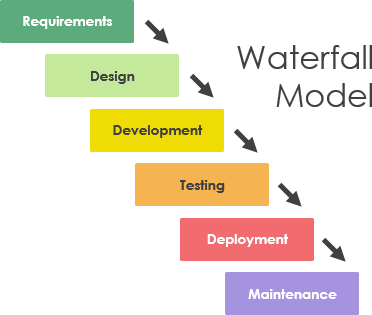

5. Etapp - Kasutamine ja hooldus
Tegu on kõige pikema tarkvara elutsüklis oleva etapiga. Siin toimub vigade parandus, funktsionaalsuse muutmine (kas
siis kliendi, turu, keskkonna või sihtrhma sisendi tagajärjel või vajadusel) ja koodi enda refaktoreerimine.
Arendustöö teostamiseks korratakse kõiki eelmisi etappe, kuid siis ainult süsteemi muutmise tarbeks, mitte enam nullist
millegi uue arendamise jaoks.
Arendusmudeli joonis:

| Head küljed |
Halvad küljed |
| Nõuded on projekti alguses selgelt paigas |
Nõudeid ei saa muuta projekti käigus |
| Valminud toode on 1:1 nõuetele vastav |
Arendusmudel ei ole paindlik muudatuste tegemiseks |
| Kulude hindamine on lihtsam, kuna planeerimata ootamusi tekib vähem, sest nõuded on paigas |
Nõuete paikapanek on keerulisem, kuna arendustööd ei alustata
enne, kui kõik nõuded on detailselt paigas,
absoluutselt kogu projekti kohta |
|
|
Kasutusalad:
Kosemudel sobib kõige paremini suurtele süsteemidele kui seda arendatakse mitmes kohas korraga. Korralik eelnev planeerimine
aitab eri paikades asuvaid meeskondi paremini kordineerida.
ALLIKAD: